Результаты сканирований⚓︎
Список результатов
При выборе пункта меню Результаты сканирования отображается список всех проведенных сканирований. На этой странице можно посмотреть все прошедшие сканирования. Каждое сканирование представлено одной строкой. Данные о результатах сканирований автоматически обновляются каждые 10 секунд, что освобождает пользователя от необходимости обновлять страницу вручную.
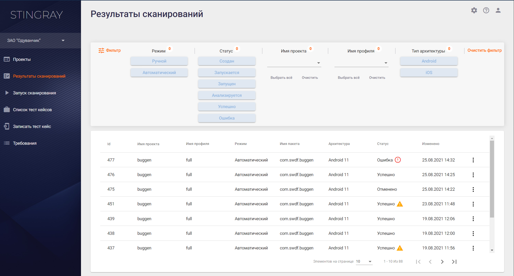
В списке отображаются сканирования, отсортированные по Id сканирования. В таблице присутствует следующая информация:
- Id — внутренний идентификатор сканирования.
- Имя проекта — имя проекта, в рамках которого проводилось сканирование.
- Имя профиля — профиль сканирования, с которым было проанализировано приложение.
- Режим — режим сканирования, ручной или автоматический.
- Имя пакета — имя анализируемого приложения в системе Android.
- Архитектура — тип архитектуры, на которой был записан тест кейс (Android или iOS).
- Статус — статус сканирования, может принимать несколько значений:
- Успешно — сканирование завершилось без ошибок. Если сканирование в целом прошло успешно, но наблюдались сбои в работе отдельных модулей, рядом со статусом отображается значок . При наведении на него курсора появляется более подробная информация о сбоях.
- Создан — сканирование создано.
- Запускается — сканирование запущено, идет процесс установки и запуска целевого приложения.
- Запущен — происходит процесс сканирования.
- Анализируется — сканирование остановлено, осуществляется процесс анализа собранной информации.
- Отменяется — сканирование было запущено, но инициирована его отмена с использованием расположенного справа раскрывающегося меню.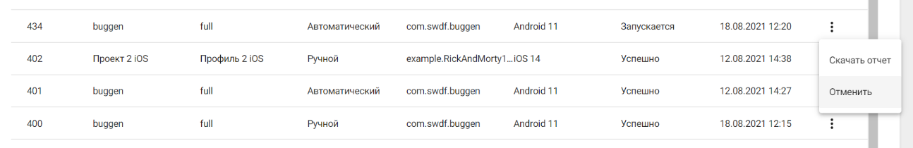
-
Отменено — сканирование отменено с использованием расположенного справа раскрывающегося меню.
-
Ошибка — сканирование завершено с ошибкой. Рядом со статусом отображается значок
 . При наведении на него курсора появляется более подробная информация об ошибке.
. При наведении на него курсора появляется более подробная информация об ошибке.
- Изменено — время запуска сканирования.
Для отображения только необходимых результатов предусмотрен фильтр. При выборе нескольких фильтров они работают вместе, то есть при выборе режима Ручной и статуса Успешно будут найдены и отображены все успешные сканирования с ручным режимом запуска.

При нажатии на нужную строку в таблице Результаты сканирований происходит переход к результатам выбранного сканирования.
Кроме этого, находясь на данной странице, можно скачать PDF-отчет о сканировании, инициировать повторный анализ или удалить результаты сканирования. Для выполнения перечисленных действий используйте расположенное справа раскрывающееся меню.

Результаты сканирования
Чтобы перейти на страницу Результат сканирования, нажмите на строку нужного сканирования в таблице Результаты сканирования. На открывшейся странице содержится вся информация по анализу приложения: выявленные уязвимости, собранные за время работы приложения данные, соответствие стандартам и требованиям. Для выбора доступно четыре или пять вкладок в зависимости от типа сканирования: Общая информация, Дефекты, Собранные данные, Требования, Запись сканирования.
Общая информация
Вкладка Общая информация содержит сведения о проведенном сканировании и краткую информацию о проверенном приложении.
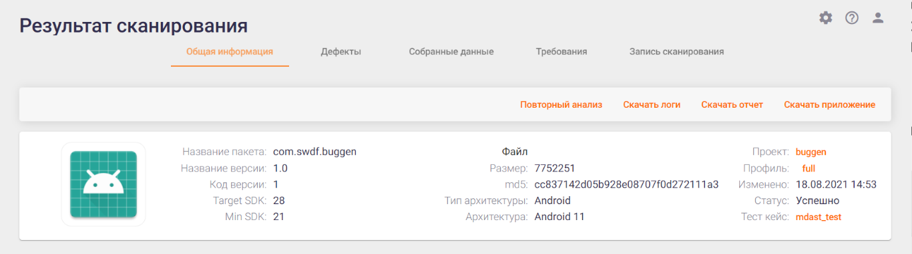
На этой вкладке представлена общая информация по сканированию:
- Название пакета — имя приложения в системе.
- Название версии / код версии — версия, указанная в манифесте приложения для более точной идентификации анализируемого приложения.
- Target SDK/Min SDK — версии SDK, для которых собрано данное приложение
- Файл — информация о загруженном файле.
- Размер — размер файла.
- md5 — хэш сумма файла.
- Тип архитектуры / Архитектура — архитектура сканируемого приложения (Android / iOS).
- Проект, в рамках которого проводилось сканирование. Данное значение представлено в виде ссылки, нажав которую можно перейти в соответствующий проект.
- Профиль, в рамках которого проводилось сканирование. Данное значение представлено в виде ссылки, нажав которую можно перейти в соответствующий профиль сканирования.
- Изменено — дата сканирования.
- Статус — статус сканирования.
- Тест кейс — название используемого тест кейса.
Кнопки, расположенные в правом верхнем углу, позволяют выполнить следующие действия:
- Повторный анализ — провести повторный анализ результатов сканирования с применением актуальных правил анализа уязвимостей для данного приложения.
- Скачать логи — скачать лог-файл сканирования.
- Скачать отчет — получить подробный отчет о результатах сканирования в формате pdf.
- Скачать приложение — скачать файл сканируемого приложения.
Дефекты
На каждую выявленную уязвимость системой заводится дефект. Список всех найденных во время сканирования дефектов показан в левой половине вкладки Дефекты. В правой части данный вкладки представлена информация о выявленной уязвимости с ее детальным описанием, а также даны рекомендации по ее устранению.

Для удобства работы с дефектами существует возможность выбрать и применить для отображаемых дефектов фильтр. Для этого нажмите кнопку Фильтр в левом верхнем углу и выберите из выпадающих списков одно или несколько значений для фильтрации по параметрам Критичность, Статус и Состояние. Если выбран уровень критичности Высокий и статус Подтвержден, то будут отображаться все подтвержденные дефекты с высоким уровнем критичности. Фильтр может быть очищен по нажатию кнопки Очистить фильтр справа вверху. При повторном нажатии на кнопку Фильтр в левом верхнем углу, поле фильтрации будет свернуто.
На вкладке Дефекты представлены следующие сведения о дефекте:
- ID дефекта в системе.
- Уязвимость — требование, соответствие которому нарушает данный дефект.
- Критичность дефекта:
- «» — критичный;
- «» — высокий;
- «
 » — средний;
» — средний; - «» — низкий;
- «» — инфо.
- Статус дефекта:
- «» — подтвержден;
- «» — ложное срабатывание;
- «
 » — не обработан.
» — не обработан.
Начальное заполнение значений полей дефектов производится системой автоматически во время анализа результатов.
При нажатии на дефект в левой половине вкладки Дефекты справа отображается детальная информация о нем.
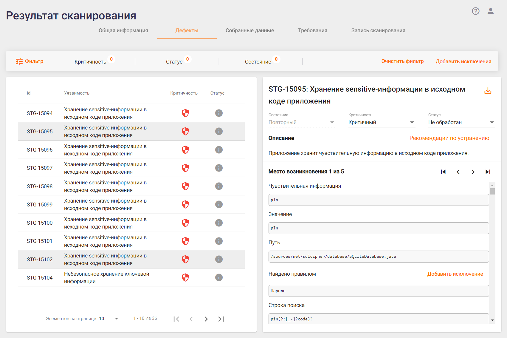
Приводится следующая информация:
- ID дефекта в системе.
- Название выявленной уязвимости. Рядом с названием располагается иконка «
 », нажав которую можно скачать отчет об уязвимости в формате PDF.
», нажав которую можно скачать отчет об уязвимости в формате PDF. - Состояние дефекта:
- Новый — если этот дефект был впервые найден во время этого сканирования, либо он уже встречался ранее, а затем проблема была решена и дефект был закрыт, но при этом сканировании вновь проявился.
- Старый — если этот дефект был уже ранее найден во время предыдущих сканирований.
- Исправленный — это состояние для тех дефектов, которые были найдеры в предыдущих сканированиях, но в текущем сканировании их уже нет.
- Критичность дефекта. В этом поле отображается текущее значение критичности дефекта и предоставляется возможность поменять критичность, выбрав новое значение из выпадающего списка. Важно отметить, что при смене критичности дефект автоматически получает статус «Подтвержден», то есть, присваивая дефекту уровень критичности, мы признаем, что он существует.
- Статус дефекта. В этом поле отображается текущий статус дефекта и предоставляется возможность поменять статус, выбрав новое значение из выпадающего списка.
- Описание дефекта в краткой форме характеризует найденную уязвимость. Рядом с описанием располагается ссылка на Wiki-страничку с подробным описанием уязвимости, рекомендациями по исправлению, примерами исходного кода и ссылками на материалы по этой уязвимости.
Примечание: Отдельно следует отметить дефекты, выявленные модулем «Поиск ранее найденной чувствительной информации». В поле Описание таких дефектов, кроме упомянутой выше информации, можно найти ссылку на уязвимости (Смотреть детали), которые послужили основанием для создания такого дефекта (подробнее).
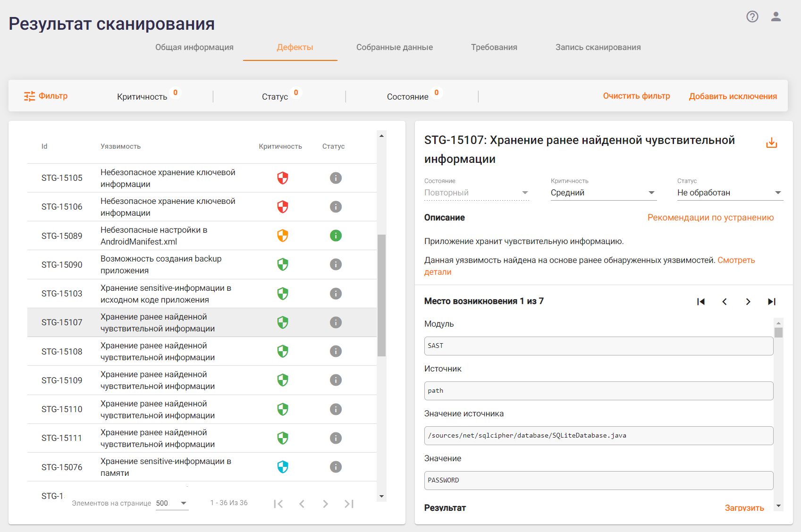
- Место возникновения дефекта. Если обнаружено несколько уязвимостей одного типа, они группируются в один дефект, а справа от данного поля появляются стрелки, с помощью которых можно переходить между уязвимостями. Ниже приводится важная фактическая информация по найденной уязвимости, например, обнаруженная чувствительная информация, место ее обнаружения, и т. п.
- В поле Результат отображается фрагмент кода или содержимое файла (до 5000 знаков), в котором обнаружена уязвимость. Если необходимо загрузить соответствующий файл целиком, нажмите ссылку Загрузить, расположенную справа.
Если в результате анализа были найдены уязвимости, которые определяются нами как ложные срабатывания, они могут быть добавлены в исключения как на уровне проекта, так и на уровне организации (ко всем проектам организации). Для этого необходимо выбрать один или несколько обнаруженных дефектов, изменить их статус на «Ложное срабатывание» и нажать кнопку Добавить в исключения, расположенную в верхнем правом углу вкладки Дефекты окна Результат сканирования.

В появившемся окне Добавление исключений выберите, на каком уровне вы хотите добавить исключения — на уровне проекта или на уровне организации, а затем нажмите кнопку Добавить.
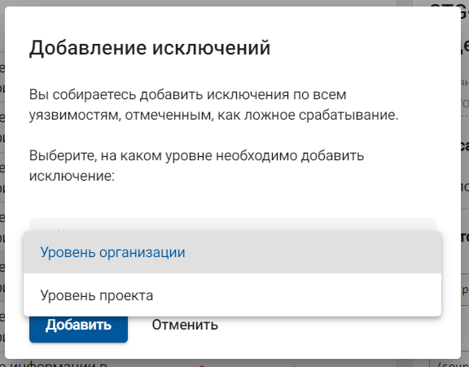
Также можно добавить исключение для отдельной уязвимости, нажав кнопку Добавить исключение рядом с заголовком Найдено правилом в описании соответствующей уязвимости.
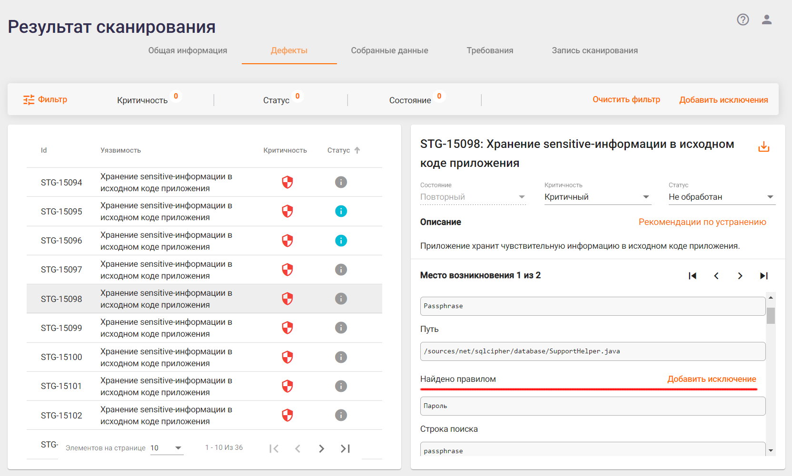
В появившемся окне Добавление исключения выберите, на каком уровне вы хотите добавить исключение — на уровне проекта или на уровне организации, а затем нажмите кнопку Добавить.
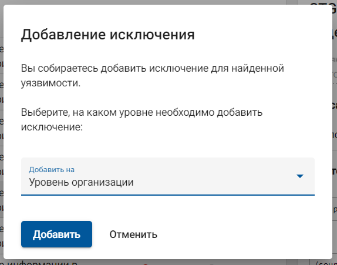
В результате добавления исключений при повторном анализе результатов или при следующем сканировании в рамках этого проекта, если выбран уровень проекта, или для всех проектов организации, если выбран уровень организации, такие уязвимости учитывать не будут.
Собранные данные
На вкладке Собранные данные отображается вся информация о работе приложения, собранная за время сканирования. Информация разделена по модулям, которые отвечают за сбор данных. Для модулей предусмотрена возможность скачивания собранных данных в виде zip-архива с помощью кнопки Загрузить данные модуля, или же, возможно скачать все данные сканирования сразу в одном архиве с помощью кнопки Загрузить все данные.
Для работы с собранными в ходе сканирования данными выберите на странице Результаты сканирований вкладку Собранные данные.
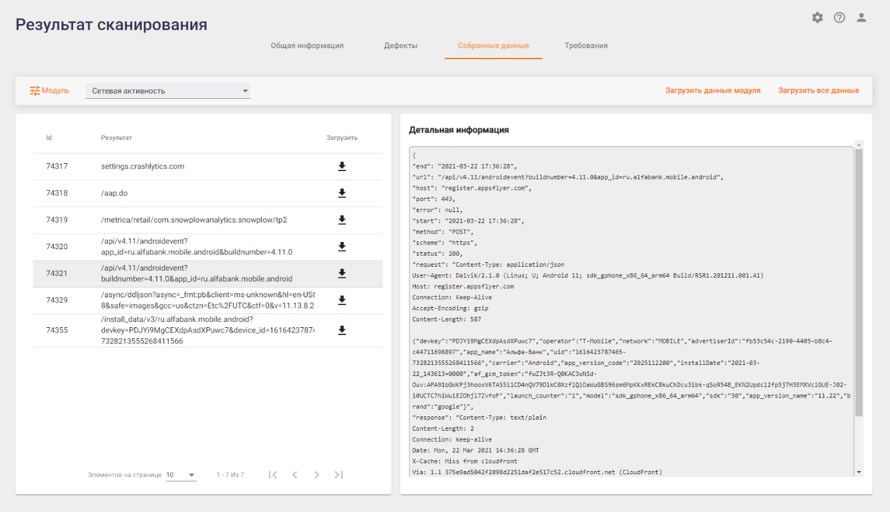
На данной вкладке доступны данные, собранные во время сканирования приложения всеми включенными в профиле модулями. Модуль для просмотра собранных данных может быть выбран из выпадающего списка в верхнем левом углу. Каждый из модулей собирает данные, специфичные только для него. Соответственно, формат представления данных на вкладке отличается для каждого модуля.
На рисунке выше в качестве примера приведены данные, собранные модулем «Сетевая активность». В этом случае были собраны данные, переданные по сети — адрес, хост, протокол, время, метод, порт, а также содержание запроса и ответа. Такого сорта дополнительная информация может оказаться полезной в работе с результатами анализа.
На рисунке ниже приведен еще один пример, иллюстрирующий другую область работы приложения — данные, собранные модулем «Отслеживание Activity». Здесь Activity — это все различные экраны приложения, которые были запущены во время сканирования. Для каждого экрана (Activity) приведены его имя и параметры запуска.
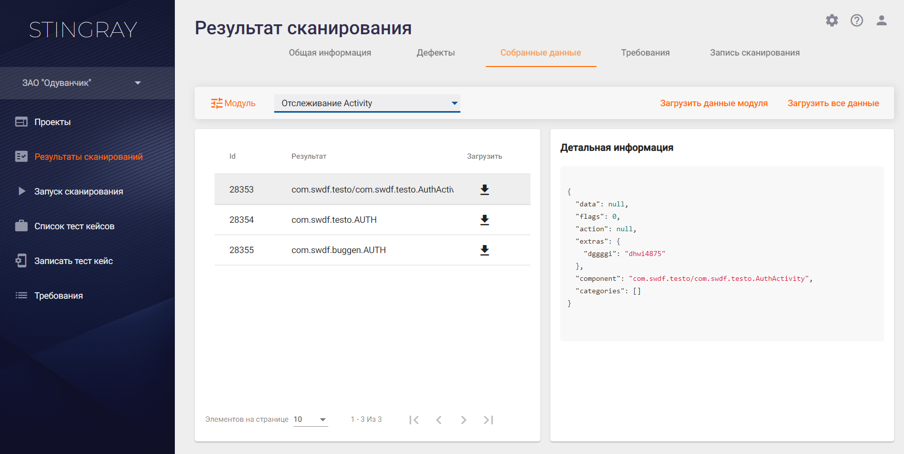
Результаты работы всех модулей собраны в одной системе, что значительно упрощает их анализ. Такой подход обладает явными преимуществами по сравнению с ситуацией, когда данные о работе приложения последовательно и в различных форматах собираются несколькими утилитами.
Помимо предоставления пользователям возможности работы с собранными данными, система на их основе делает выводы об уязвимостях приложения. Правила анализа собранных данных для поиска уязвимостей подробно описаны в разделах Правила Руководства пользователя и Правила анализа на уровне Организации Руководства по установке, настройке и интеграции.
Требования
Для работы с требованиями выберите на странице Результат сканирования вкладку Требования. На этой вкладке отображаются результаты проверки выполнения требований для проанализированного приложения. На вкладке Требования представлено соответствие стандартам безопасности, выбранным в профиле сканирования. Требования и стандарты, в которых были выявлены несоответствия, отмечаются красным цветом.

Красным цветом отмечены требования, которые не выполнены. Если кликнуть мышкой по невыполненному требованию на вкладке Стандарт в левой части, в правой части на вкладке Дефекты появится список типов дефектов, которые были проверены для выбранного требования.
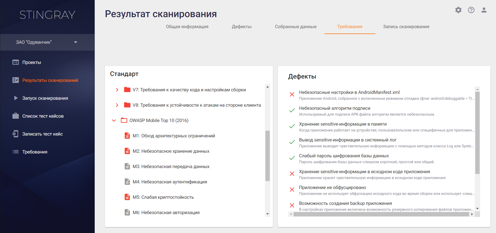
В случае обнаружения дефектов определенного типа при проверке требования, этот тип дефектов отмечается значком «», а само требование считается невыполненным и отмечается красным цветом. Если дефектов определенного типа при проверке требования выявлено не было, такой тип дефектов отмечается значком «». Требование в целом считается выполненным, если при его проверке не было выявлено ни одного дефекта из числа относящихся к этому требованию типов дефектов.
При нажатии в области Дефекты на тип дефекта, отмеченного значком «», появится окно с детальной информацией по дефектам данного типа:
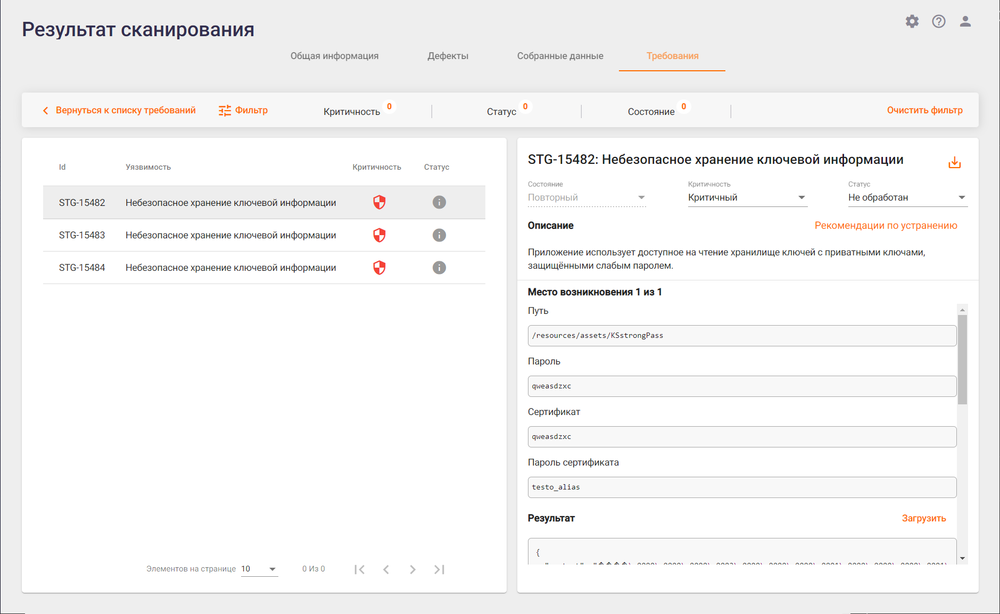
Для возвращения к списку требований нажмите кнопку Вернуться к списку требований в левом верхнем углу.
На вкладке Требования доступны данные по выполнению требований всех выбранных в профиле сканирования стандартов. Если в профиле добавить еще один стандарт к списку проверяемых, то после этого при просмотре результатов всех уже ранее проведенных с этим профилем сканирований, на вкладке Требования будет отображаться также соответствие ранее собранных результатов и вновь выбранного в профиле стандарта.
Запись сканирования
Данная вкладка доступна только для результатов автоматического сканирования и предоставляет возможность просмотра видеозаписи проведенного сканирования и процесс выполнения тест кейса.
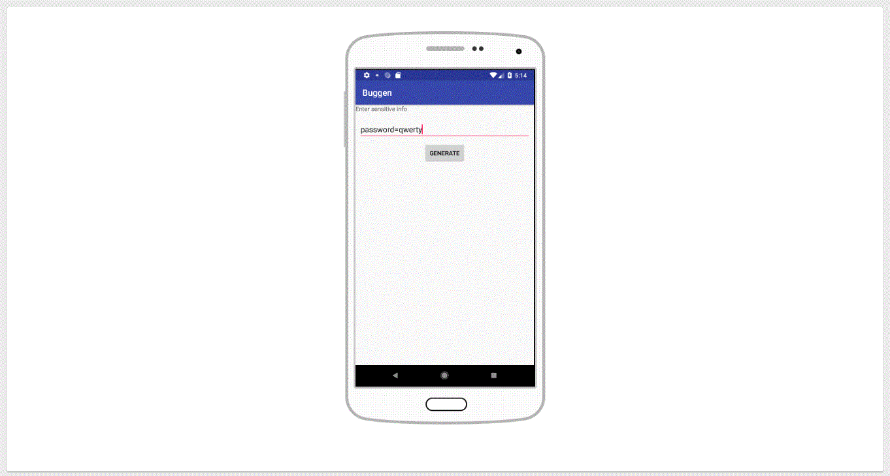